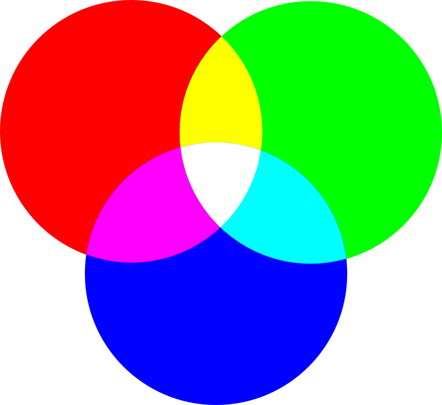

Una de las diferencias entre los colores pigmento y los colores luz son sus colores primarios y secundarios. Los colores primarios no se pueden conseguir mezclando otros colores. Los colores secundarios se consiguen mezclando por igual (50%-50%) dos colores primarios, dando como resultado un nuevo color.
| Colores pigmento | ||
|---|---|---|
| Colores primarios | Mezcla entre: | Colores secundarios |
| Cian | Cian + Amarillo | Verde |
| Amarillo | Amarillo + Magenta | Bermellón |
| Magenta | Magenta + Cian | Violeta |
Los colores pigmetno se generan por la luz reflejada por ciertos pigmentos aplicados a las superficies. De ahí su nombre.
| Colores luz | ||
|---|---|---|
|  | ||
| Colores primarios | Mezcla entre: | Colores secundarios |
| Rojo | Rojo + Verde | Amarillo |
| Verde | Verde + Azul | Cyan |
| Azul | Azul + Rojo | Magenta |
Los colores luz son resultado de que ojo humano está compuesto por conos y bastones (son las células fotosensibles que nos permiten ver), y de los cuales cada uno es sensible a un tipo de luz. Unos a la luz roja, otros a la luz verde y otra a la azul.
Fuentes: